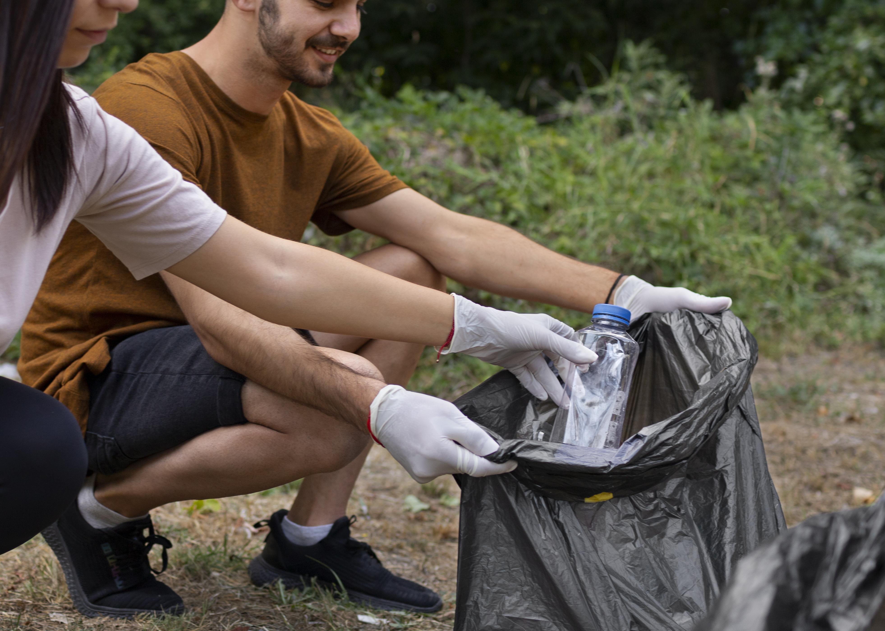

Horta Comunitária

Projeto que incentiva o cultivo de hortaliças em espaços urbanos, promovendo a alimentação saudável e a interação social.
Coleta Seletiva de Lixo

Implementação de pontos de coleta para separar recicláveis e reduzir a quantidade de resíduos enviados para aterros sanitários.
Reaproveitamento de Água da Chuva

Instalação de cisternas para coleta de água da chuva, diminuindo o consumo da rede pública e contribuindo para a preservação dos recursos hídricos.
Evite comprar por impulso
O consumo não deve ser uma fuga ou refúgio, deve-se analisar o que realmente é necessário, assim evita a super produção e também economiza.